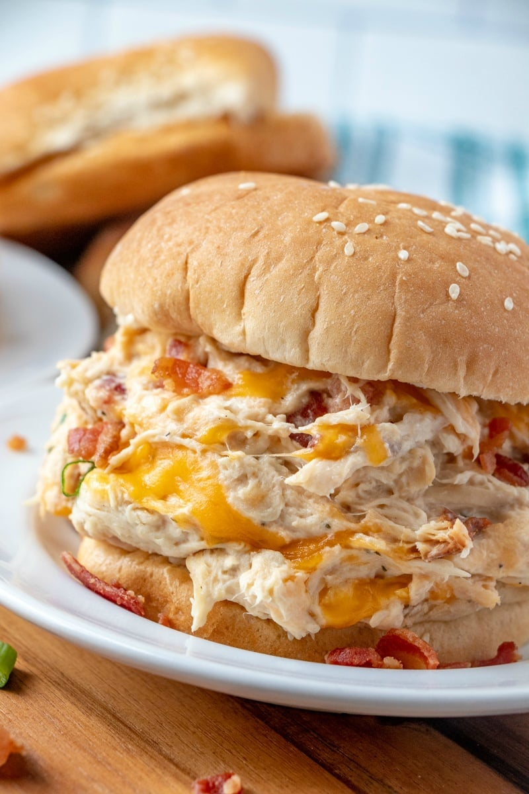

Crack Chicken

Easy and delicious recipe that the whole family will love.
What could be more simple than tossing a few ingredients into a slow cooker and walking away with little-to-no prep? Nothing! And when I tell you that the whole family loves it, I am not lying. Every time I make this recipe it's absolutely devoured within minutes.
Crack chicken is most commonly served on buns but you can put it on a salad, wrap it in a tortilla, serve it over rice, or eat it on its own! It's very versatile and makes great leftovers (that is, if there is any leftovers). It's great with just the chicken, ranch seasoning, and cream cheese but if you have time and want to add some more flavor, be sure to add the bacon, cheddar cheese, and green onions at the end.
Ingredients
- 2 lbs chicken breast
- 1 ranch seasoning packet
- 8 oz cream cheese
- 1/2-3/4 c. cooked bacon, crumbled
- 1 c. shredded cheddar cheese
- 2-4 green onions, finely chopped
Directions
- Place chicken in slow cooker set to "low". Sprinkle ranch seasoning over chicken. Place 8 oz block of cream cheese on top of chicken and seasoning (no need to mix).
- Cook on low for 6-7 hours.
- 15 minutes before the end of cooking time, cook your bacon and crumble/chop with a knife. Shred the cheese and chop the green onions.
- Shred the chicken with a fork and mix it with the cream cheese. Do not drain the juice!
- Add bacon crumbles, shredded cheese, and diced green onion to the chicken mixture. Serve on buns (or tortillas or naan or pita or rice).